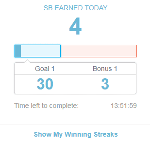
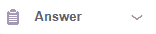

sondages payées


Cliquez sur les images pour plus d'informations.
En dépit de toutes les possibilités de générer de l'argent dans Swagbucks, offre une interface simple et très esthétique, alors vous verrez le menu des options que vous pourrez observer sur le côté gauche de la plateforme une fois que vous êtes entré, ainsi que l'explication de chacun de vos options.

Home - Accueil:
Cette section correspond à la scène que nous verrons à chaque fois que nous entrons dans notre compte, dans lequel nous pouvons voir des façons populaires de gagner des SB ainsi que d'autres façons de générer des SB, telles que des sondages et des offres.

Shop - Acheter:
Avec cette option, nous accédons à la section du cashback, des offres et des coupons; au moyen du cashback, nous serons en mesure d'obtenir SB pour faire des achats en ligne, étant soumis aux termes et conditions de chaque magasin, pour pouvoir voir ces termes et plus d'informations il suffit de placer la souris sur l'offre en question pour voir ses informations supplémentaires; il convient de noter que nous pouvons filtrer les résultats à travers le menu des catégories également sur le côté gauche; enfin nous trouverons les offres et coupons permettant d'obtenir des réductions au moyen de codes et de cashback.


Watch - Regarder:
Ici, nous pouvons accéder à des présentations, à des vidéos individuelles ou à des listes de vidéos, pour lesquelles nous recevons des bonus lorsque nous les voyons, nous avons besoin de passer 45 secondes dans chaque vidéo pour passer au suivant.

Answer - Répondre:
Ici, nous pouvons accéder à toutes les sondages disponibles à l'époque, en indiquant le temps approximatif à investir dans la réponse à une enquête ainsi que le montant de bonus SB, il convient de noter que si vous ne pouvez pas répondre à une enquête de disqualification, c'est à dire ne rentre pas dans le profil du sujet de l'étude, nous serons payés 1 SB, avec un maximum de 10 SB par disqualification par jour; si vous avez des doutes sur ce sujet, nous vous invitons à revoir plus bas la section

Discover - Découvrir:
Dans cette section, nous pouvons obtenir un bonus en vous inscrivant ou vous abonner à différents services, certains paiements gratuits et autres; vous pouvez également obtenir plus d'informations de chaque offre en plaçant la souris sur l'offre spécifique.


Search - Rechercher:
Par le biais de laquelle utiliser la barre de recherche de Swagbucks nous pouvons recevoir SB en bonus, obtenant 20 SB pour la première fois que nous faisons une recherche à travers Swagbucks; dans les autres recherches, le bonus sera aléatoire, obtenant parfois un bonus et d'autres sans obtenir de bonus; également dans cette section, nous avons l'option de définir le moteur de recherche Swagbucks comme notre moteur de recherche de choix.


Play - Jouer:
Etre capable de gagner des SB pour chaque montant d'argent que nous dépensons sur un jeu en ligne, ainsi que de pouvoir jouer à des mini-jeux Swagbucks avec lesquels nous pouvons gagner jusqu'à 10 SB.


Il y a aussi une barre supérieure dans Swagbucks, comme vous pouvez le voir dans l'image suivante à travers laquelle nous aurons accès à:

Search the web & earn - Rechercher sur le web et gagner:
En nous permettant de rechercher dans le moteur de recherche Swagbucks et comme expliqué ci-dessus, nous pouvons gagner SB en retour.
SWAG code - Code SWAG:
Dans cet espace, nous pouvons introduire des codes publiés dans différents endroits afin d'échanger des récompenses; pour information payeur nous sommes présentés le lien

Daily goal - Objectif quotidien:
Ici, nous pouvons accéder à un bonus supplémentaire si nous gagnons un certain montant de SB par jour, facilement réalisable, que l'objectif quotidien est réinitialisé tous les jours et que vous cliquez
|  |  |
Refer & Earn - Référer et gagner:
Cette section correspond au système de référence, à travers lequel vous pouvez inviter vos amis à rejoindre Swagbucks; pour être un peu étendu et pour votre commodité, nous parlerons du système de référence ci-dessous.

Inbox - Boîte de réception:
Par le biais de laquelle nous serons informés de nouveaux sondages, offres et présentations ainsi que de leur temps restant à gagner.

En outre, vous pouvez également remarquer sur le côté gauche de l'écran, lors de la saisie de l'une des différentes sections, que ce soit les vidéos, les sondages ou les offres; une liste de choses à faire, où nous pouvons recevoir un bonus en complétant au moins 6 des activités de la liste, ainsi que d'obtenir un bonus en complétant les 8 activités.

Enfin pour pouvoir racheter les SB nous pouvons accéder à cette section à travers 3 liens; pour le premier, vous devez remarquer que, par exemple, lorsque vous entrez dans l'une des sections, supposons la section des sondages, vous verrez la scène suivante sur le côté gauche; lorsque vous placez la souris sur l'option, le menu suivant sera affiché, avec les mêmes options que précédemment mais avec l'option supplémentaire
|  |  |
Les autres liens sont dans un menu latéral, également situé sur la gauche et le menu déroulant qui apparaît lorsque vous placez la souris sur votre balance; dans les deux cas, pour échanger les BS, il faut cliquer sur
 |
De cette façon, nous avons les moyens suivants d'échanger le SB, tels que les cartes-cadeaux, cartes PayPal pour la valeur de 25 USD, 50 USD, 100 USD et 250 USD et nous permettant également la merveilleuse option de contribuer à une fondation caritative.


Si votre intention est de réclamer votre paiement via PayPal, vous devez cliquer sur la carte, dans ce cas, 25 USD, puis sur Utiliser et enfin vous devez entrer votre nom et prénom, nous demander de nous assurer que notre nom et le nom de famille correspondent au nom et au prénom de notre compte PayPal ainsi qu'à la vérification de ce compte; nous informant également que le paiement sera effectué dans un délai de 10 à 14 jours ouvrables.


Maintenant, c'est le tour du système de référence, comme vous le savez, pour y accéder, vous devez cliquer sur

De cette façon, vous pouvez inviter vos amis à travers un e-mail, également à travers un lien unique et personnel; publier également ce lien à travers différents réseaux sociaux ou utiliser des bannières publicitaires; tout à votre choix; devoir faire attention à ne pas spammer.
Le processus d'inscription est assez simple, il suffit d'entrer votre email et votre mot de passe, ainsi que de cliquer sur l'email de confirmation dans votre boîte de réception. Vous trouverez ci-dessous un bouton qui vous permettra de vous inscrire.


Quoi sont les questions de pré-qualification?
Ce sont les questions qui nous sont posées dans un sondage pour déterminer si nous sommes de bons sujets d'étude pour l'enquête spécifique; c'est-à-dire que nous pouvons entrer dans un sondage, poser quelques questions et selon les réponses que nous donnons, nous pouvons accéder à l'enquête ou non; ici aussi ce que vous applique avez dit, être une personne de la consommation, nous aurons plus propabilidad peut accéder au sondage, cependant, souvent, nous ne pouvons pas qualifier les sondages étant ce que la normale, pourquoi pas pourquoi s'embêter ou se décourager. Nous vous recommandons également la patience et la plupart des questions de fois préqualification sont les mêmes questions que vous avez rempli votre profil, parce que les clients, à savoir ceux qui effectuent les sondages de conduite qui cherchent la cohérence dans les réponses et ne sont pas prises pour allumer les informations que nous donnons; Enfin, il est intéressant de noter que les questions de préqualification ne prennent jamais plus de 5 minutes pour répondre, car il serait injuste de passer 30 minutes des questions de préqualification pour finalement être disqualifiés.
Si je ne vis pas dans les pays acceptés, puis-je utiliser le VPN?
Nous ne le recommandons pas, car si vous utilisez un service VPN payant ou gratuit, vous utiliserez l'adresse IP d'un pays accepté, jusqu'à ce que tout se passe bien, le problème est que vous ne serez pas le seul à utiliser cette nouvelle adresse IP. qu'il y aura beaucoup plus de personnes avec le compte Swagbucks utilisant la même adresse IP. Eh bien, nous pourrions dire que oui, vous pouvez utiliser VPN, mais nous ne profiterions que de vos bonnes intentions, mais nous vous invitons à continuer à naviguer sur mon-money.online, à trouver quelque chose que vous aimez et que vous pouvez faire avec une sécurité totale.
Je n'ai pas de compte PayPal
Pas de problème, la première chose que vous devez faire est d'aller sur la page PayPal, nous ne fournissons pas le lien pour votre propre sécurité, une fois là, en haut vous trouverez les options suivantes:

Ici, après avoir cliqué sur

Plus tard, on vous demandera votre sexe et vos goûts et ensuite vos données personnelles et enfin, ils vous demanderont si vous voulez associer votre carte bancaire, pouvoir reporter si vous le souhaitez en cliquant sur